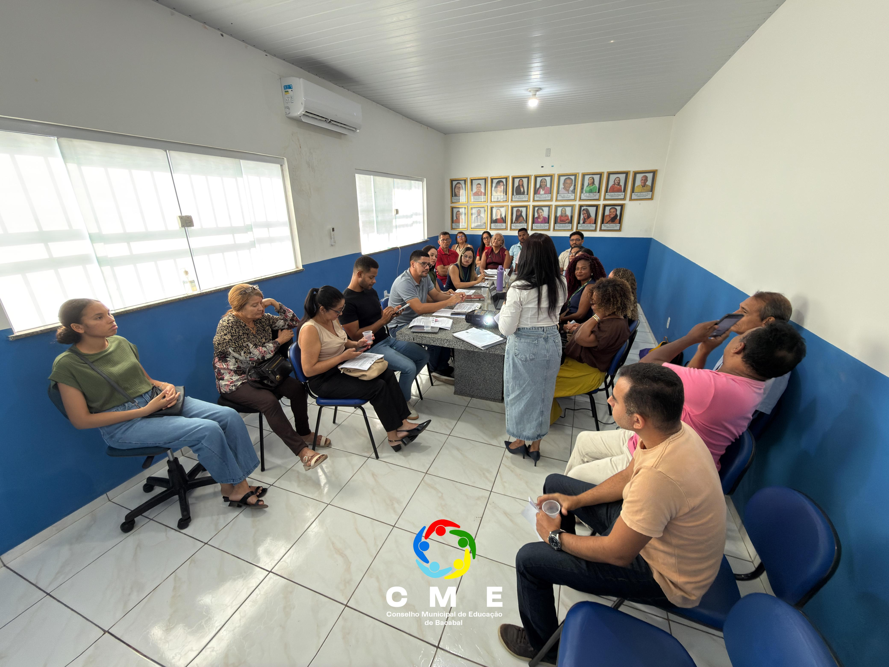
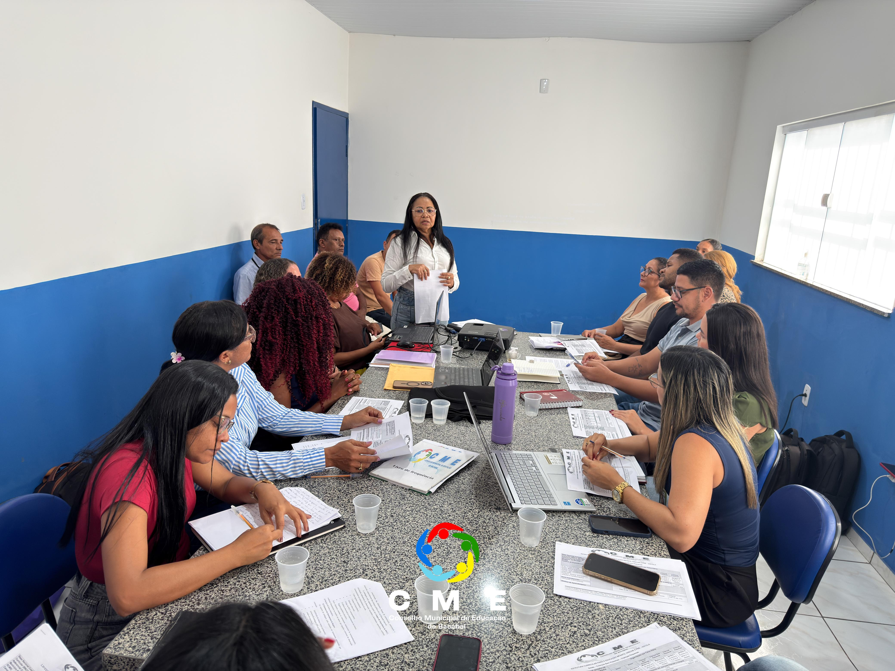
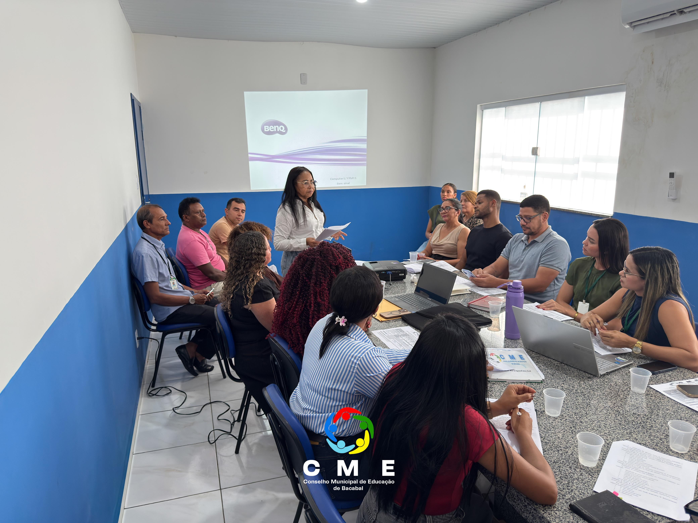

Data: 09 de Setembro de 2026
Horário: 8:00 - 18:00
Descrição
O Conselho Municipal de Educação de Bacabal realizou, nesta quarta-feira, 9 de setembro de 2026, mais uma Reunião Ordinária, na Casa dos Conselhos de Educação.
Entre as pautas discutidas, esteve o diálogo sobre a Política Nacional de Equidade, Educação para as Relações Étnico-Raciais e Educação Escolar Quilombola (PNEERQ), conduzido com a participação da conselheira Rita de Cássia Rodrigues de Castro. Também foram realizadas a leitura da ata da reunião anterior e a apresentação de informes. O momento reafirmou o compromisso do CME com o diálogo, a participação e o acompanhamento das políticas educacionais, contribuindo para o fortalecimento do Sistema Municipal de Ensino e para uma educação cada vez mais inclusiva e democrática em Bacabal.



